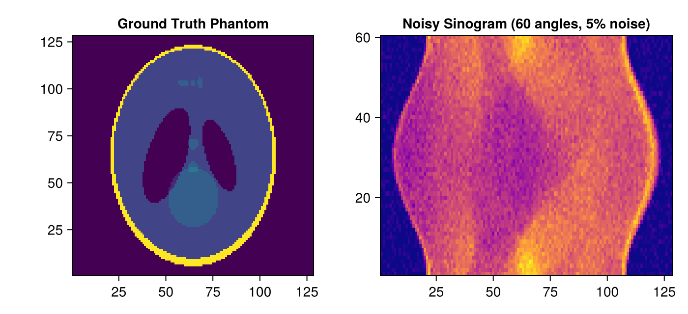
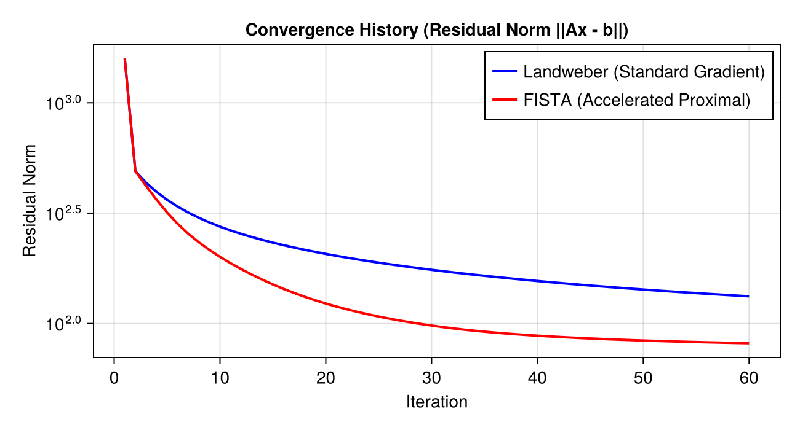
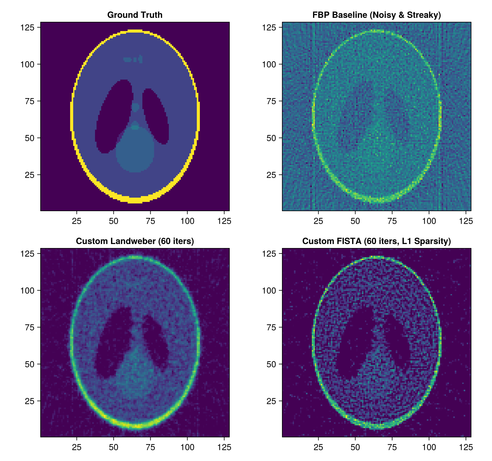

Tutorial 3: Custom FISTA Iterative Reconstruction with ASTRA Projectors
Non-negative Landweber and FISTA with TV / Soft-Thresholding Regularization.
Prerequisites
This tutorial uses Makie (recommended backend: CairoMakie) for visualization. If CairoMakie is not installed in your environment, add it by running using Pkg; Pkg.add("CairoMakie").
1. Introduction
While ASTRA provides standard built-in iterative algorithms (SIRT, CGLS, EM), scientific research often requires custom objective functions or domain-specific regularization:
- Total Variation (TV) minimization
- Wavelet / framelet $\ell_1$ sparsity priors
- Non-negativity and box constraints
By treating AstraProjectorMap as a linear operator $A$, you can implement state-of-the-art proximal gradient algorithms like FISTA (Fast Iterative Shrinkage-Thresholding Algorithm) in just a few lines of clean Julia code.
Topics covered in this notebook:
- Adding Gaussian noise to sinogram data ($b = Ax + \epsilon$).
- Setting up the linear operator $A$ and computing its Lipschitz constant $L$.
- Implementing non-negative gradient descent (Landweber iteration).
- Implementing accelerated proximal gradient (FISTA) with soft thresholding.
- Comparing convergence histories and visual reconstruction quality.
2. Package Loading and Environment Setup
using AstraToolbox
using CairoMakie
using LinearAlgebra
using Random
Random.seed!(1234)
println("Ready for Custom Iterative Solvers!")3. Generating Experimental Data and Adding Noise
Create a 128×128 Shepp-Logan phantom and project it using a 60-angle parallel-beam geometry, adding 5% Gaussian noise to simulate realistic detector readings.
nx, ny = 128, 128
vol_geom = VolumeGeometry2D(nx, ny)
x_true = shepp_logan(nx)
# 60 angles (Sparse-view setup)
angles = Float32.(range(0, pi, length = 60))
proj_geom = Parallel2DGeometry(angles, 128, 1.0f0)
# Noise-free sinogram
b_clean = project(x_true, proj_geom)
# Add 5% Gaussian noise
sigma_noise = 0.05f0 * maximum(b_clean)
b_noisy = b_clean .+ sigma_noise .* randn(Float32, size(b_clean))
# Clamp negative readings to zero
b_noisy .= max.(0.0f0, b_noisy)
fig = Figure(size = (700, 320))
ax1 = Axis(fig[1, 1], title = "Ground Truth Phantom", aspect = DataAspect())
heatmap!(ax1, x_true, colormap = :viridis)
ax2 = Axis(fig[1, 2], title = "Noisy Sinogram (60 angles, 5% noise)")
heatmap!(ax2, b_noisy, colormap = :plasma)
fig
4. Setting up Linear Operator and Lipschitz Constant
We instantiate AstraProjectorMap and compute the Lipschitz constant $L = \|A\|_2^2$ to determine the optimal step size $\alpha = 1/L$.
A = AstraProjectorMap(proj_geom, vol_geom; backend = has_cuda() ? cuda() : cpu())
# Estimate Lipschitz constant L via power iteration
function compute_lipschitz(A; iters = 20)
v = rand(Float32, size(A, 2))
v ./= norm(v)
for _ in 1:iters
v = A' * (A * v)
v ./= norm(v)
end
return norm(A * v)^2
end
L = compute_lipschitz(A)
step_size = 1.0f0 / L
println("Operator Lipschitz constant L: ", L)
println("Optimal step size (1/L): ", step_size)5. Custom Algorithm 1: Non-Negative Landweber Iteration
Minimizes $\frac{1}{2}\|Ax - b\|^2$ subject to $x \ge 0$: $x^{k+1} = \max\left(0, x^k - \alpha A^T (Ax^k - b)\right)$
function solve_landweber(A, b, step_size; max_iter = 60)
b_vec = vec(b)
x = zeros(Float32, size(A, 2))
residuals = Float32[]
for iter in 1:max_iter
# Residual r = Ax - b
r = A * x - b_vec
push!(residuals, norm(r))
# Gradient step: x <- x - step_size * A' * r
grad = A' * r
x .-= step_size .* grad
# Non-negativity projection
x .= max.(0.0f0, x)
end
return x, residuals
end
x_landweber_vec, res_landweber = solve_landweber(A, b_noisy, step_size; max_iter = 60)
println("Landweber solver finished 60 iterations.")6. Custom Algorithm 2: FISTA with Soft-Thresholding
FISTA (Beck & Teboulle, 2009) introduces Nesterov acceleration and proximal shrinkage: $y^{k+1} = \operatorname{prox}_{\lambda}(x^k - \alpha A^T(Ax^k - b))$ $t_{k+1} = \frac{1 + \sqrt{1 + 4 t_k^2}}{2}, \qquad x^{k+1} = y^{k+1} + \frac{t_k - 1}{t_{k+1}} (y^{k+1} - y^k)$
function solve_fista(A, b, step_size; max_iter = 60, lambda = 0.002f0)
b_vec = vec(b)
x = zeros(Float32, size(A, 2))
y = copy(x)
t = 1.0f0
residuals = Float32[]
for iter in 1:max_iter
# Gradient evaluated at y
r = A * y - b_vec
push!(residuals, norm(r))
grad = A' * r
# Proximal update (Soft thresholding + Non-negativity)
x_next = y .- step_size .* grad
threshold = lambda * step_size
x_next .= max.(0.0f0, x_next .- threshold)
# Nesterov momentum update
t_next = (1.0f0 + sqrt(1.0f0 + 4.0f0 * t^2)) / 2.0f0
beta = (t - 1.0f0) / t_next
y = x_next .+ beta .* (x_next .- x)
x = x_next
t = t_next
end
return x, residuals
end
x_fista_vec, res_fista = solve_fista(A, b_noisy, step_size; max_iter = 60, lambda = 0.005f0)
println("FISTA solver finished 60 iterations.")7. Comparison of Convergence Rates
Plot the residual norm $\|Ax - b\|_2$ across iterations to observe FISTA's accelerated convergence.
fig = Figure(size = (650, 350))
ax = Axis(fig[1, 1], title = "Convergence History (Residual Norm ||Ax - b||)",
xlabel = "Iteration", ylabel = "Residual Norm", yscale = log10)
lines!(ax, res_landweber, label = "Landweber (Standard Gradient)", color = :blue, linewidth = 2)
lines!(ax, res_fista, label = "FISTA (Accelerated Proximal)", color = :red, linewidth = 2)
axislegend(ax, position = :rt)
fig
8. Visual Comparison of Reconstructed Images
Compare the baseline FBP reconstruction with our custom Landweber and FISTA reconstructions. Notice how FISTA effectively suppresses noise while preserving sharp boundaries.
# Standard FBP baseline for comparison
rec_fbp = reconstruct(b_noisy, proj_geom, FBPMethod(); volume_size = (nx, ny))
img_landweber = reshape(x_landweber_vec, nx, ny)
img_fista = reshape(x_fista_vec, nx, ny)
fig = Figure(size = (800, 750))
ax1 = Axis(fig[1, 1], title = "Ground Truth", aspect = DataAspect())
heatmap!(ax1, x_true, colormap = :viridis)
ax2 = Axis(fig[1, 2], title = "FBP Baseline (Noisy & Streaky)", aspect = DataAspect())
heatmap!(ax2, rec_fbp, colormap = :viridis)
ax3 = Axis(fig[2, 1], title = "Custom Landweber (60 iters)", aspect = DataAspect())
heatmap!(ax3, img_landweber, colormap = :viridis)
ax4 = Axis(fig[2, 2], title = "Custom FISTA (60 iters, L1 Sparsity)", aspect = DataAspect())
heatmap!(ax4, img_fista, colormap = :viridis)
fig